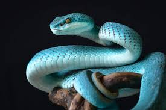
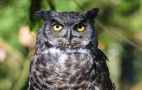
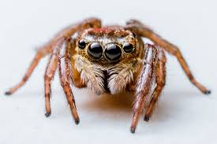

კატა არის მშვიდი და ჭკვიანი შინაური ცხოველია,უყვარს თამაში და ძილი. არის დამოუკიდებელი მაგრამ უყვარს ადამიანებთან ურთიერთობაც
უფრო ვრცლად იხილეთ აქ
ძაღლი არის ადამიანის ერთგული და მხიარული ცხოველი,უყვარს სეირნობა თამაში და გართობა. არის კარგი მცველი
უფრო ვრცლად იხილეთ აქ გველი ქვეწარმავალი ცხოველია,რომელსაც არ აქვს ფეხები. ის შეიძლება იყოს შხამიანი. ზოგი სახეობა არ არის საშიში ადამიანისთვის.
უფრო ვრცლად იხილეთ აქ ბუ ღამის ფრინველია,რომელსაც კარგად ესმის და ხედავს სიბნელეში. იგი ნადირობს ძირითადად ღამით.
უფრო ვრცლად იხილეთ აქ ობობა პატარაა და აქვს რვა ფეხი,შეუძლია ქსელების გაკეთება რომელშიც აბამს მწერებს და შემდეგ იკვებება ამით.
ის ცხოვრობს სახლშიც და ბუნებაშიც
ზოგი შხამიანია მაგრამ უმეტესობა არ არის ადამიანისთვის საშიში